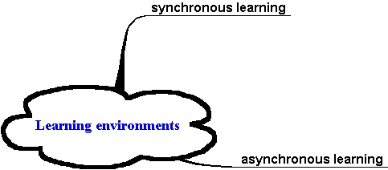
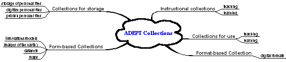
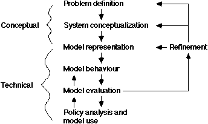

ADEPT Collections and Services
- Collections and Services
Model
- Description: Develop a
user-centric model of ADEPT collections and services. This determination
will be delivered in the form of a single white paper whose writing will
be coordinated by Ray Smith. The document will have four major sections:
- Anita
Coleman will write an overview and literature review, partly in
cooperation with DLESE, discussing issues faced by ADEPT in building
collections and associated services for learning environments, and
potential resolutions of these issues. This section will serve as a
foundation for organizing and building teaching and learning
collections for ADEPT (and subsequent ingestion into ADL) by defining a
model teaching/learning collection. The issues to be discussed include,
but are not limited to: definitions of educational collections,
different levels of granularity of objects represented in such
collections and their interrelationships, metadata for educational
objects and collections, identification of the components and
characteristics of collections in DLs for use in teaching/learning
contexts, and services available to users for accessing/using
collection items. It will include concrete examples of ADEPT
collections.
- Tim
Tierney will write descriptions of four collections and scenarios
for their use in learning environments:
- geomorphology (with T.Smith and D.Roberts at
UCSB, and with an independent effort involving C.Borgman
and UCLA researchers)
- tectonics (with TBD)
- spatially distributed
human processes (with S.Sweeney)
- religious sites (with B.Holdrege and W.Powell)
- Anita
Coleman will write a section on using simulation models in
teaching. This will include a conceptual description of model types and
educational uses, and DL services that could facilitate their use in
specific educational contexts (such as, classroom teaching, independent
student learning, and guided learning labs.)
- Specific issues to be
addressed with respect to models include:
- definitions
- categories
- metainformation
- discovery
- cataloging
- archiving
- accessing
- Preliminary documents:
- Terry
Smith, Anita Coleman, and Ray Smith will write a summary section proposing
services that ADEPT should support.
- Deliverables
- Feb. 15: Literature
review of model collections, services, and usage patterns for DLs in
learning environments and model instructional
collections
- Feb. 15: Conceptual
paper on using models for teaching
- Feb. 28: Four
collection-specific user scenarios
- Mar. 15: Specifications of services for constructing/using ADEPT collections
Proposed Document Outline:
- Define educational collections (identify learning concepts (educational goals), define scientific reasoning, define learning environments) in terms of their characteristics
- Propose a definition that includes the levels of granularity at which objects must be represented in the collection, their interrelationships, and the metadata necessary for such representation
- Propose the services for the use of such collections in selected learning environments
Status:
Step 1: Identify definitions of collections as per project – discussed at Collections Meetings (01/31 and 02/14) with the diagrams below.


Characteristics of ADEPT collections:
- Real data (Measurements, images of the earth – satellite/remotely sensed AVHRRR, etc.)
- Computer simulations and models
- Digital data (objects) – no slides, etc.
- Teaching materials such as advance organizers, concept maps, exercises, problems, etc. (formats include: ppt pdf. Doc, html, txt, xls)
- Multimedia materials (movies, audio, animations)
- Maps (can we specify formats)
RFC: Send your definitions ADEPT collections to asc@acm.org
Dave V’s definition:
A collection of resources collected for a certain purpose.
In this case, they are collection geomorphic information. Even if the subject
and keywords do not contain geomorphology, (eg dem's) any item collection
should
be associated with this collection.
once this collection is finished, then someone needs to go though and build the
"semantic" map for the collection. These resources were collected
with a certain
topic an project in mind, how do they realate together.
Step 2: Identify Characteristics/steps of learning:
- Working memory (chunking) + long term information space
- Schema acquistion (aids transfer)
- Automation
- [add]
1. elaborate problem-solving, memorization (
Educational objectives:
Bloom’s Taxonomy [mapped using?] Media for Inquiry Taxonomy
Step 3: Answer the question: What is scientific reasoning?
Reasoning is closely related to problem-solving and involves both concept formation (inductive reasoning) and deductive reasoning (logical argument).
It has generally been found that people perform better with relations that can be visualized and there’s both a spatial representation theory of reasoning and a subsequent semantic theory. Mayer has a classic book on this subject (Revlin & Mayer, 1974).
Scientific reasoning (at the practical, visible level) has the following steps:
- Concept acquisition (gather facts)
- [add]
Put in stuff here about concept learning such as their characteristics:
Other characteristics: [add]
1) Errors in concept formation are: overgeneralization, undergeneralization, and misconception
Step 4: Investigate and propose the use of a theory (for example, Component Display Theory, Roberts’ model, etc. is used below), and specify the following minimum characteristics of an “exemplar” teaching/learning ADEPT collection:
Objective - Define a concept (Remember-Use)
Generality - Definition (attributes, relationships)
Instance - Examples (attributes present, representations)
Generality Practice - State definition
Instance Practice - Classify (attributes present)
Feedback - Correct generalities/instances
Elaborations - Helps, Prerequisities, Context
“If the generality was presented by an explanation or illustration, followed by practice examples, this would be an expository strategy (EG,Eeg). On the other hand, if the students were required to discover the generality on the basis of practice examples, this would be an inquisitory strategy (IG, Ieg). “
Roberts et al describe a sequence of activities for
developing a model (see fig 1).

Source: What is the modelling curriculum? http://www.ultralab.anglia.ac.uk/Pages/ULTRALAB/A_Good_Read/ModellingCurriculum.html
Step 5: Define learning environments (comes from the Feb. 28 User scenarios paper from Tim)
Step 6: How can these learning concepts define an ADEPT educational collection and be modeled in the collections and services for a DL of educational users?
Services we’ve identified thus far include:
- Collection Building: Allow users to build totally new collections as well as integrate from existing collections in the DL (this assumes that the DL has digital objects only (no slides, etc.)
- Collection Organization: Allow users to construct Iscapes which meet their personal preferences, styles, and uses/tasks (this assumes that Iscapes are some hybrid combination of digital data + metadata + functional behavior).
- Modelling: Enable the users to build models which describe concepts in visually different ways and performs mathematical functions
- Collections Browsing: Allow the users to browse collections using the DE metaphor (map layers, themes, footprints, etc.). Allow the browsing the DL by concepts (view concepts and their relationships)
- Allow the user to identify and save matched sets of USGS dem, drg and doqq files
- Allow the user to construct concept maps or mind maps – this assumes that tools (integrated within a DL – namely, ADEPT) for constructing and browsing will be investigated and that selections from our metadata can be represented as concept maps or mind maps in these interfaces
Step 7: Work with DLESE (Status: unresolved)
RFC: Idea for Proposal: See http://www.alexandria.ucsb.edu/~acoleman/tmaps.html (question 10 at end)
References (what is an
educational collection):
Yourda, Yolaine, and Marc Helier. Applying IEEE Learning Object Metadata
to Publishing Teaching Programs. URL:
http://wwwsi.supelac.fr/yb/publis/edmedia99.html Available: 01/15/2001
Markus. Educational Metadata. URL: http://www.ddl.org/figtree/pub/proceedings/prague-final-papers/markus.html
Marshall, Catherine C.
Making Metadata: A Study of Metadata Creation For A Mixed Physical-Digital
Collection. URL:
http://www.csdl.tamu.edu/~marshall/dl98-making-metadata.html
Available: 01/15/2001
Powell, Andy. Simple Collection Description. URL:
http://www.ukoln.ac.uk/metadata/cld/simple Available: 01/15/2001.
Learning with software: pedagogies and practices.
URL: http://www.educationau.edu.au/archives/cp/05.htm

Created by Anita Coleman
Created on 02/14/01
Last modified: 02/15/01